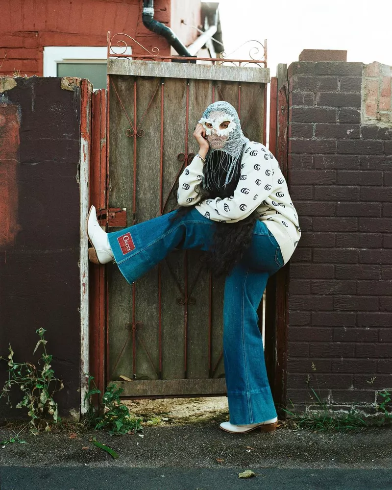
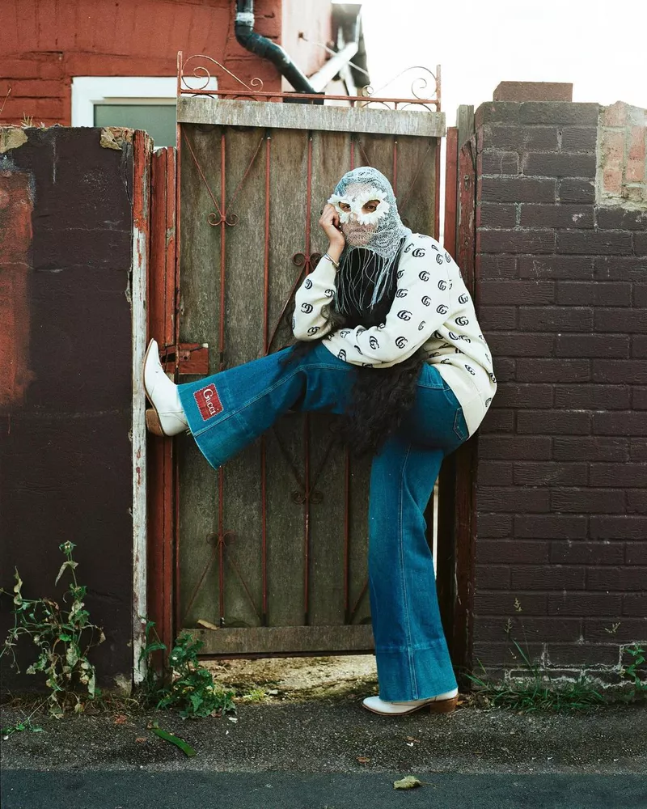

Keerthana Kunnah is an Indian-born, London-based artist who uses photography as a means to initiate conversations around socio-cultural issues.
Seeing familiar Southeast Asian elements in fashion photography marks significant progress towards a more authentic and inclusive representation of the Asian diaspora.
Her work also challenges societal norms surrounding gender and sexuality and fosters dialogue on these topics, particularly within the broader South Asian community.
Through her practice, she creates a safe space for exploring these issues, both for the artist herself, but also for the spectators.
Generally in her work she blends fashion and documentary photography, creating a distortion between reality and fiction, binary and non-binary, in an effort to shed light on her community in contemporary visual culture.
I often emphasize the importance of incorporating asian elements into fashion photography. Not only is it providing asian representation in a predominantly white industry,
but it also acts as an accessible entry point for viewers, a point of curiosity and questioning.
Engaging with the visual aesthetics allows people to connect with the image on a
surface level before exploring the multilayered contexts behind it. As many children of the Asian diaspora struggle to restore harmony with their relationship to their home culture,
for Kunnath photography is an important tool in renegotiating her relationship with India. It’s helping her create the visual world she craved as a kid as it is cultivating new modes
of creativity and inclusiveness for the future generations.
 

Courtesy of the artist